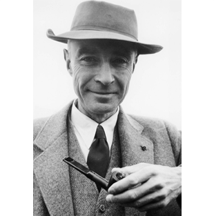
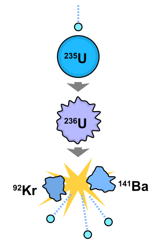

Aqui será falado sobre um dos maiores avanços da humanidade, e também de uma das maiores catastrofes, falaremos sobre o projeto Manhattan, e como ele impactou na humanidade tanto positivamente quanto negativamente.
Meu nome é Gabriel Estevão, seja-bem vindo ao meu breve resumo sobre o Projeto Manhattan.
Projeto Manhattan foi um programa de pesquisa e desenvolvimento que produziu as primeiras bombas atômicas durante a Segunda Guerra Mundial. Foi liderado pelos Estados Unidos, com o apoio do Reino Unido e Canadá.
Começou no dia 13/08/1942 e terminou 3 anos depois em agosto do ano de 1945.
O líder do projeto foi Julius Robert Oppenheimer.
Fonte: National Geographic PortugalO Projeto Manhattan foi o projeto desenvolvido pelos Estados Unidos da América com a finalidade de construir as primeiras bombas atômicas da história.
A necessidade das bombas atômicas vieram por contra da maior guerra da humanidade, a segunda guerra mundial, um evento caótico e rodeado por avanços tecnológicos e caos.
A primeira bomba atômica recebeu o nome de Trinity, ela foi testada em Los Alamos, Novo México.
O projeto nasceu de uma preocupação levantada pelo físico nuclear húngaro Leo Szilard, ele convenceu Albert Eistein a assinar uma carta em conjunto endereçada ao presidente dos Estados Unidos, Franklin D. Roosevelt. Eles anunciaram sua preocupaçãoao presidente de que os alemães estariam construindo armas nucleares, já que lá que foi descoberta a fissão nuclear
Então iniciando uma corrida armada, ambos os países que estavam em lados rivais da guerra, tentariam criar armas nucleares.
Os Estados Unidos queriam descobrir as armas nucleares principalmente para acabar a segunda guerra e evitar futuras guerras, pois o uso de uma arma dessa magnitude poderia trazer o fim da humanidade
A fissão nuclear se trata da quebra de um elemento o dividindo em dois outros elementos com massas menores, geralmente o elemento utilizado é o urânio-235 (₉₂²³⁵U).
A soma das massas dos elementos menores é sempre menor que a do elemento original e a massa diferencial entre o elemento e os dois sub-elementos é transformada em energia, assim gerando energia.
A fissão de 1kg de urânio-235 é igual a queima de 3 milhões de kg de carvão.
Fonte: WikipediaPrós
Contras
No ano de 1945, um dos maiores desastres da humanidade ocorreu, por consequência do projeto Manhattan, as cidades de Hiroshima e Nagasaki foram bombardeadas causando incontáveis vítimas para o lado dos Aliados.
Com isso, começava o ínicio do fim da segunda guerra mundial, causando tanto a perca de milhares de vidas no país do Japão, quanto mais milhões de pessoas para os lados do Eixo e dos Aliados.